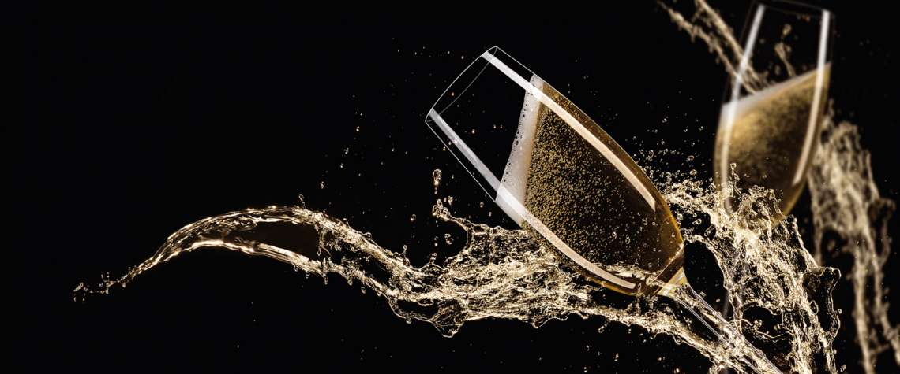
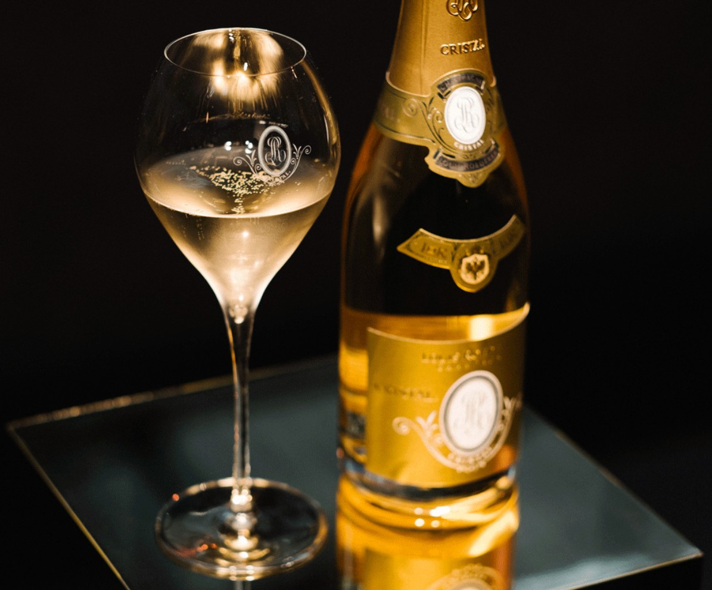
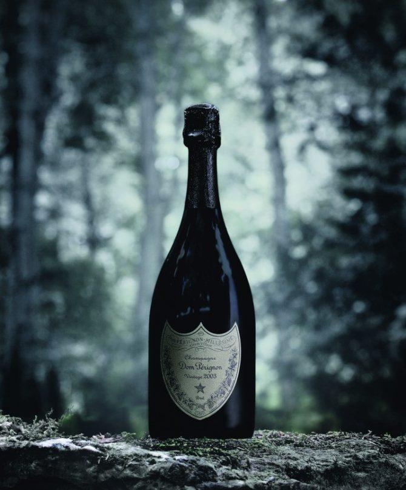

SPARKLING WINE
DOM PÉRIGON
Dom Pérignon is one of the world’s most iconic prestige Champagnes, celebrated for its seamless balance of richness, elegance, and fine mineral structure. Produced only in exceptional vintages, it showcases layers of citrus, brioche, cream, and delicate toast that evolve beautifully with age. Its reputation is built on meticulous craftsmanship, long cellar maturation, and a consistently luxurious profile that makes it a benchmark for high-end sparkling wine.
Price: £410

SPARKLING WINE
LOUIS ROEDERER
Cristal is a legendary luxury Champagne originally created for Russian royalty, distinguished by its crystalline purity, silk-textured finesse, and remarkable aging potential. Its flavor profile blends ripe stone fruits, white flowers, chalky minerality, and refined bubbles that deliver exceptional precision. Revered by collectors and enthusiasts alike, Cristal represents a pinnacle of elegance and craftsmanship within the world of prestige cuvées.
Price: £372
SPARKLING WINE
POMMERY CUVÉE
Pommery Cuvée Louise is an ultra-premium Champagne crafted only in the best years, known for its refined delicacy and graceful, linear expression. It offers subtle layers of citrus, almond, white flowers, and soft pastry notes that unfold with impressive length and harmony. Named after the visionary Madame Louise Pommery, this cuvée embodies purity, sophistication, and the quiet power of impeccably aged Chardonnay-led blends.
Price: £190
SPARKLING WINE
BOLLINGER ANNÉE
Bollinger La Grande Année is a richly structured, Pinot-dominant prestige Champagne prized for its depth, intensity, and bold, expressive character. Fermented in oak barrels and aged extensively on its lees, it delivers flavors of roasted apple, brioche, hazelnut, and spice supported by a powerful, textured palate. Known for its longevity and distinctive house style, La Grande Année stands as one of the most robust and gastronomic luxury Champagnes.
Price: £260

Louis Roederer Cristal
Champagne crafted for purity

Pommery Cuvée Louise
Delicate, elegant prestige cuvée

Bollinger Grand Année
Rich and powerful champagne

Dom Pérignon Wine
Iconic prestige champagne